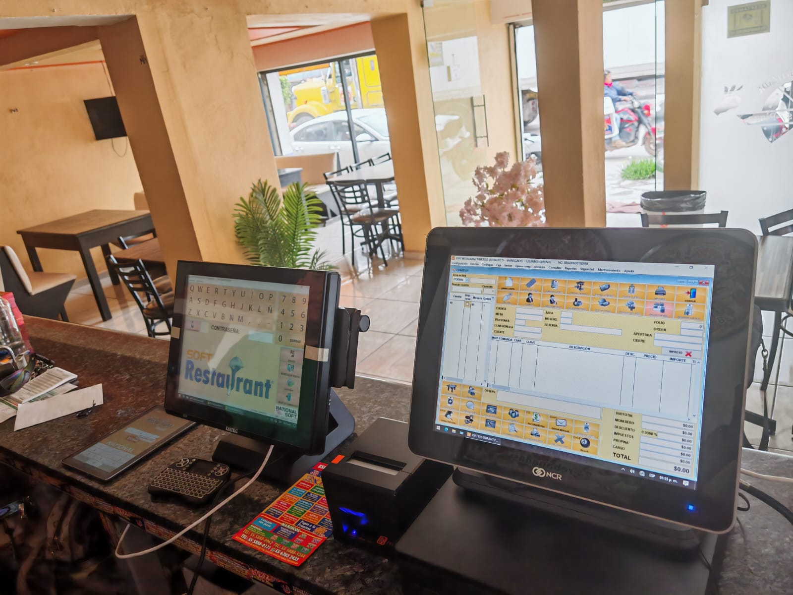
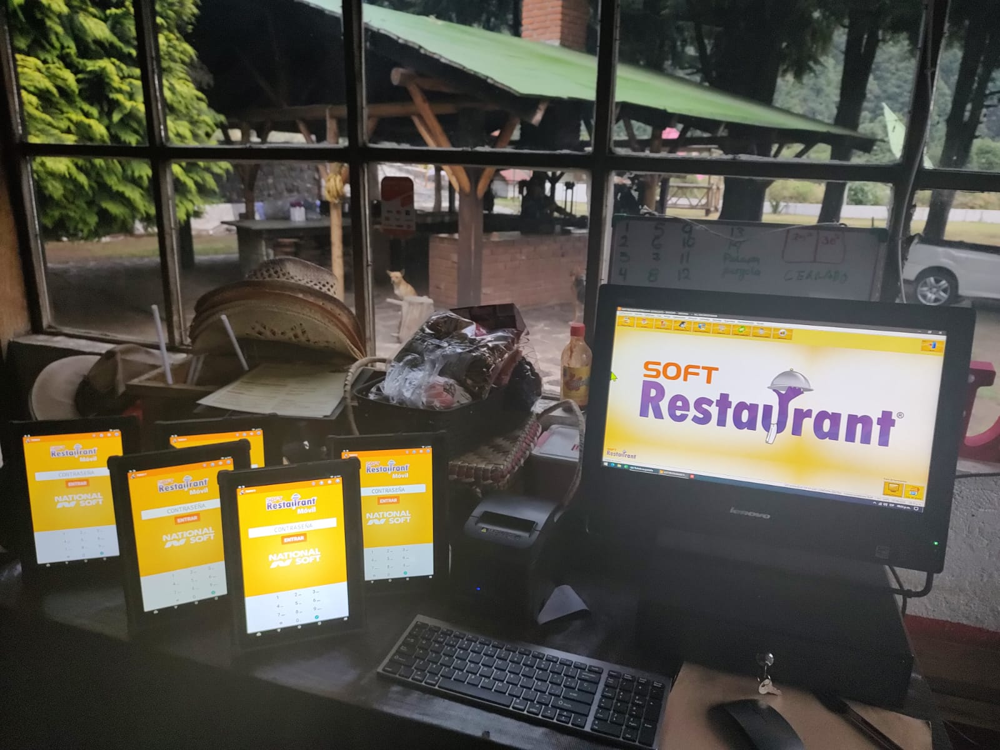
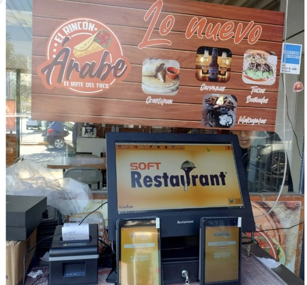
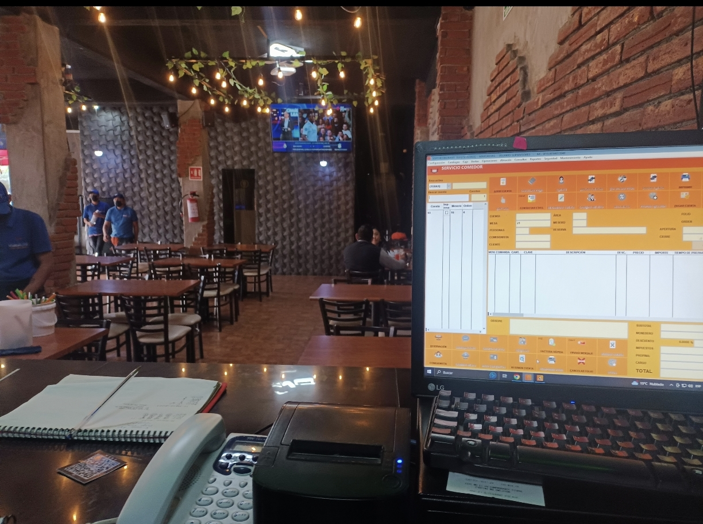
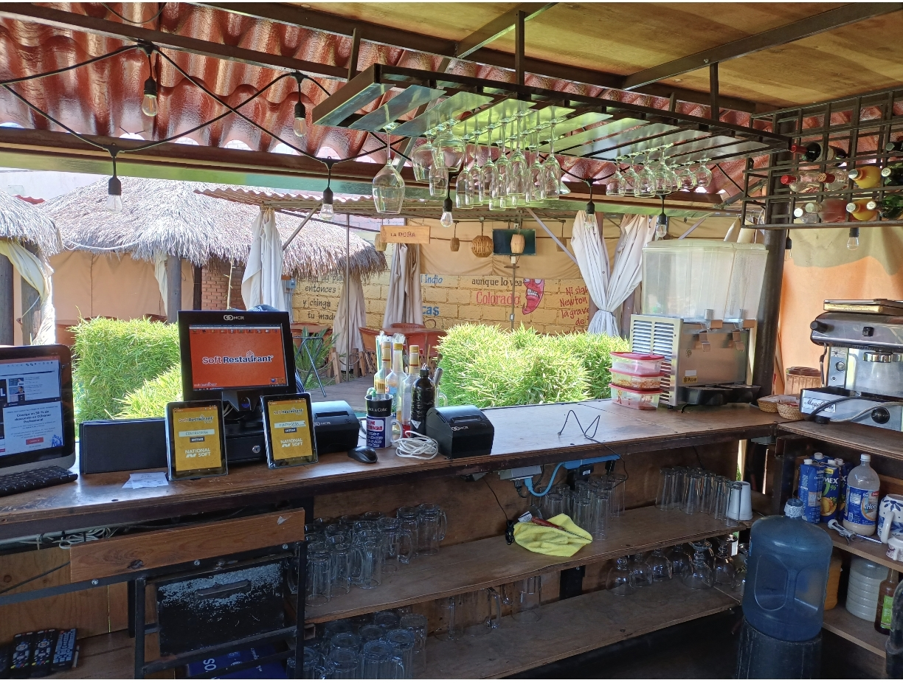
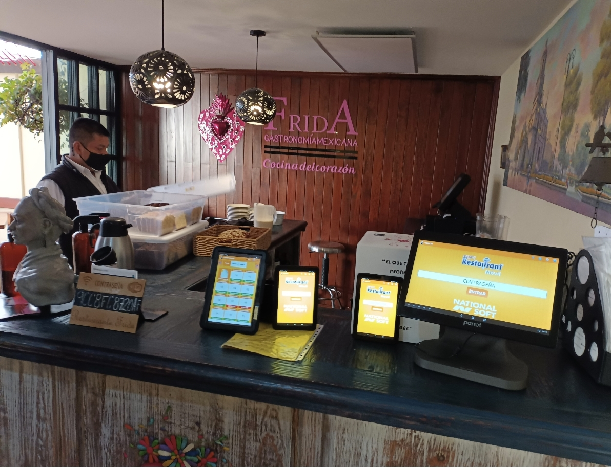
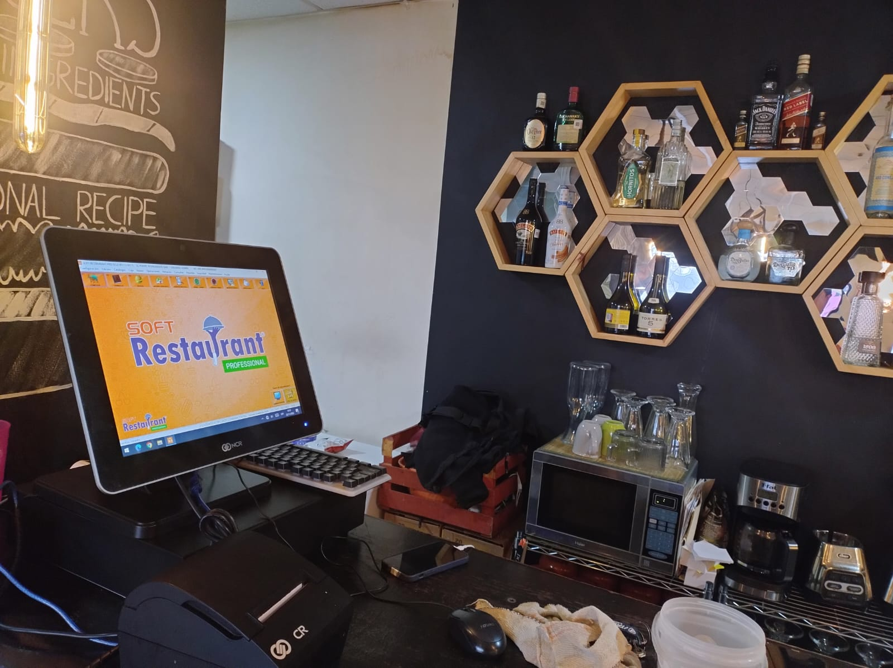
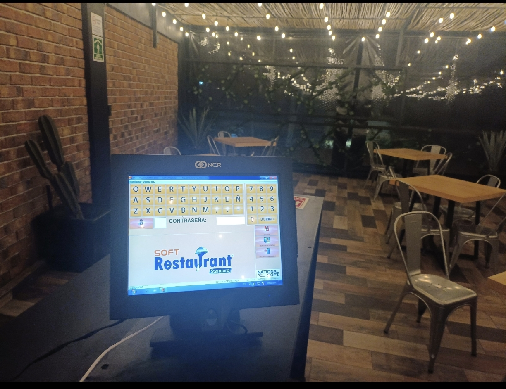
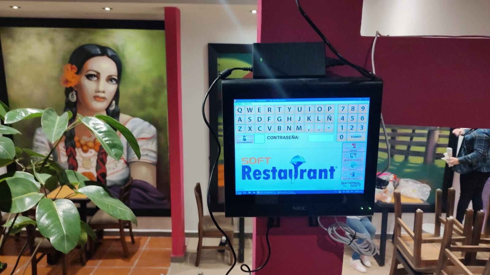

Experiencia consolidada
Mas de cuatro decadas en el sector respaldan un criterio probado para negocios que necesitan estabilidad y continuidad.
Compured Company integra software, punto de venta y herramientas de gestion para que tu restaurante venda, registre y opere con mas claridad desde el primer servicio.
Compured Company combina experiencia, tecnologia y acompanamiento para que cada negocio implemente herramientas alineadas a su operacion real.
Mas de cuatro decadas en el sector respaldan un criterio probado para negocios que necesitan estabilidad y continuidad.
La solucion esta pensada para restaurantes, bares y establecimientos de comida con flujos de venta exigentes.
Cada proyecto se adapta a la forma de operar del cliente, desde el punto de venta hasta comandas y seguimiento.
La tecnologia se acompana con asesoria clara para que el equipo adopte el sistema con confianza.
Soluciones visibles en instalaciones reales: terminales POS, software de restaurante, impresoras y comandas moviles para agilizar el servicio.



Tres pasos claros para pasar de la necesidad operativa a una solucion instalada y alineada al negocio.
Se revisa el tipo de negocio, flujo de servicio y necesidades de control para definir la configuracion adecuada.
Se prepara una solucion con software, equipos y parametros pensados para la operacion diaria del restaurante.
El equipo recibe guia para usar la plataforma y mantener un control mas ordenado despues de la implementacion.
Las instalaciones documentadas muestran entornos reales donde el sistema conecta caja, pantalla, impresoras y dispositivos moviles para ordenar el servicio.
Flujos de caja y comandas visibles desde terminales tactiles o estaciones de mostrador.
Dispositivos para acercar la captura de pedidos al mesero y reducir friccion en el servicio.
Impresoras integradas para tickets y procesos internos del restaurante.
Control mas claro para tomar decisiones sobre ventas, mesas y productividad.
.jpeg)
Las imagenes locales del proyecto se usan como evidencia visual de implementaciones en ambientes de restaurante.






No se proporcionaron resenas textuales de clientes; por eso esta seccion muestra criterios de compra, no testimonios inventados.
Control claro de ventas, mesas y pedidos para operar con menos incertidumbre.
Herramientas visibles en caja, barra y piso para acelerar el servicio.
Acompanamiento especializado para adaptar tecnologia al negocio, no al reves.
El formulario abre WhatsApp con tu mensaje listo para continuar la conversacion.
Soluciones tecnologicas para gestion y control de negocios de comida.
No proporcionada en la informacion del proyecto.
No proporcionado en la informacion del proyecto.
No proporcionado en la informacion del proyecto.
El numero no fue proporcionado; el boton prepara el mensaje sin inventar datos.
Abrir WhatsApp